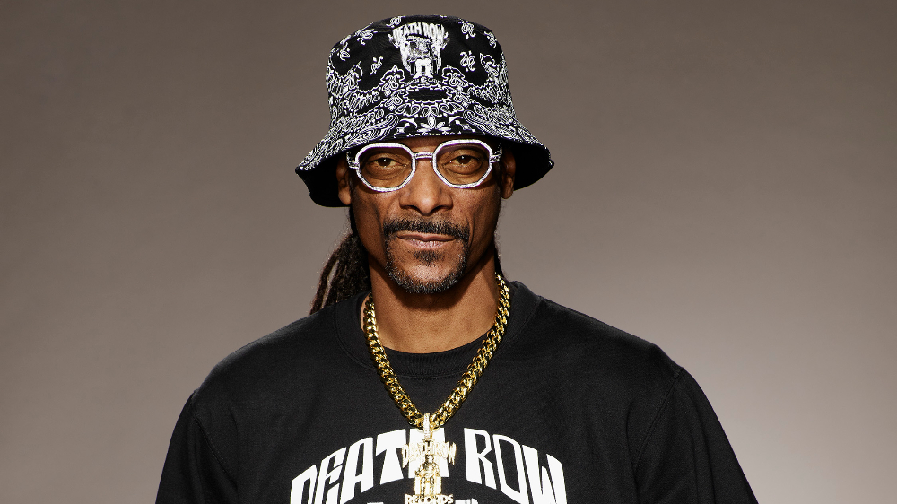

Snoop Dogg
Born: 20 October 1971
Age:
Years Active: 1991–present
Genre/s: West Coast hip-hop, G-funk, gangsta rap
Label/s: Death Row, Aftermath, Interscope, Gamma, Create, Doggy Style, Empire, Def Jam, RCA Inspiration, E1, I Am Other, Columbia, RCA, MCA, Geffen, Star Trak, Priority, Capitol, EMI, No Limit
Member of: Mount Westmore, QDT, Tha Eastsidaz
Calvin Cordozar Broadus Jr. (born October 20, 1971), known professionally as Snoop Dogg, is an American rapper, singer, record producer, songwriter, and actor. A key figure in West Coast hip-hop, he helped define G-funk and gangsta rap, and is often regarded as one of the greatest rappers of all time. Known for his signature drawled delivery and melodic flow, his lyrics frequently address social issues such as recreational drug use and gun violence.
He rose to prominence in 1992 through his collaborations with Dr. Dre, first on the single "Deep Cover" and later on The Chronic, including "Nuthin' but a 'G' Thang". Produced by Dr. Dre, his debut album Doggystyle (1993) debuted atop the Billboard 200 with 806,000 copies sold in its first week. The album spawned the hit singles "What's My Name?" and "Gin and Juice", later receiving quadruple platinum certification by the Recording Industry Association of America (RIAA). His second album, Tha Doggfather (1996), also debuted at number one.
After leaving Death Row Records, Snoop Dogg signed with Master P's No Limit Records, and saw continued success with his albums Da Game Is to Be Sold, Not to Be Told (1998), No Limit Top Dogg (1999), and Tha Last Meal (2000). His album R&G (Rhythm & Gangsta): The Masterpiece (2004) spawned the single "Drop It Like It's Hot" (featuring Pharrell), his first Billboard Hot 100 number one. In later years, he adopted the alias Snoop Lion, under which he released a reggae album, Reincarnated (2013), and a namesake documentary film about his experience in Jamaica. The album was followed by the Pharrell-produced Bush (2015) and the gospel album Bible of Love (2018). In 2022, he acquired Death Row Records from MNRK Music Group and released BODR (2022).
Snoop Dogg has sold over 35 million records worldwide. In 2022, he co-headlined the Super Bowl LVI halftime show, earning a Primetime Emmy Award. He has received several accolades including seventeen Grammy Award nominations, two Sports Emmy Awards and a star on the Hollywood Walk of Fame. Outside of music, he has appeared in numerous films and media, including serving as a coach on The Voice.